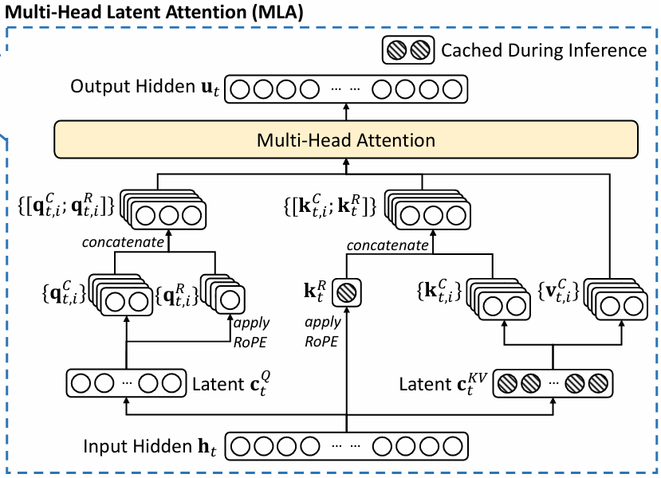
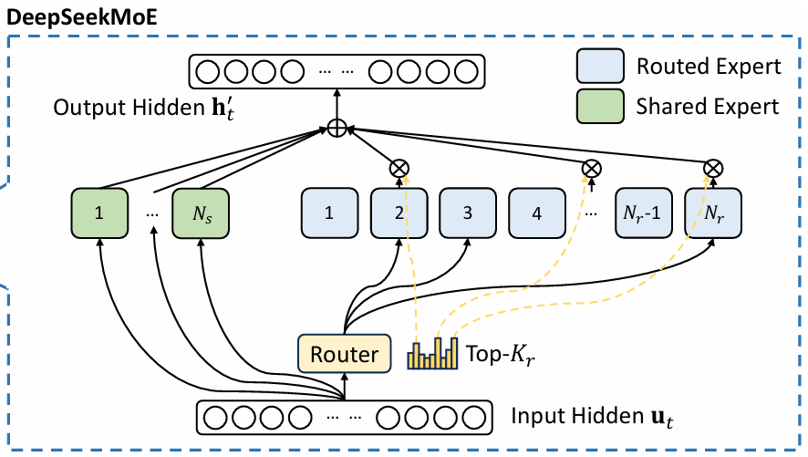
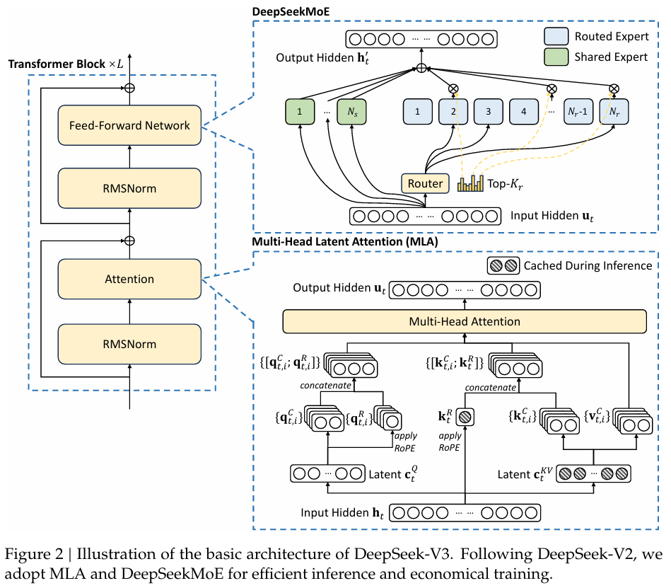

nanoDeepSeek
1. Token (word) Embedding
-
In LLMs:
- Each token (word) is mapped to an integer
- This integer is then mapped to a vector
- The code below is a module that maps integers (0 ~ 102400) to vectors (dim = 2048)
-
In this parallel version:
world_size = number of GPUsrank = GPU index
-
Given:
- $ W \in \mathbb{R}^{V \times d} $: Embedding matrix
- $ x $: Input index
- Embedding function: $$ E(x) = W[x] $$
# vocab_size: int = 102400
# dim: int = 2048 # Model dimension.
# s.embed = ParallelEmbedding(a.vocab_size, a.dim)
class ParallelEmbedding(nn.Module):
def __init__(s, vocab_size, dim):
super().__init__()
assert vocab_size % world_size == 0
s.dx = vocab_size // world_size
s.weight = nn.Parameter(tc.empty(s.dx, dim))
def forward(s, x: tc.Tensor):
x1 = rank * s.dx
if world_size > 1:
mask = (x < x1) | (x >= x1 + s.dx)
x -= x1
x[mask] = 0
y = F.embedding(x, s.weight)
if world_size > 1:
y[mask] = 0
dist.all_reduce(y) # default op: sum
return y
2. Linear Layers
-
Maps a vector to another vector: $$ y = xW^T + b $$
-
The code uses
quantization+parallelism, I am ignoring these for nowtc.float32element size: 4 bytestc.int8element size: 1 byte
def linear(x, w: tc.Tensor, b=None) -> tc.Tensor:
if w.element_size() > 1:
return F.linear(x, w, b)
elif gemm_impl == "bf16":
w = weight_dequant(w, w.scale)
return F.linear(x, w, b)
else:
x, scale = act_quant(x, block_size)
y = fp8_gemm(x, scale, w, w.scale)
return y if b is None else y + b
class Linear(nn.Module):
part_out_features: int
dtype = tc.bfloat16
def __init__(s, I, O, bias=False, dtype=None):
super().__init__()
s.weight = nn.Parameter(tc.empty(O, I, dtype=dtype or Linear.dtype))
if s.weight.element_size() == 1:
O2 = (O + block_size - 1) // block_size
I2 = (I + block_size - 1) // block_size
s.weight.scale = s.scale = nn.Parameter(tc.empty(O2, I2, dtype=tc.float32))
else:
s.register_parameter("scale", None)
if bias:
s.bias = nn.Parameter(tc.empty(s.part_out_features))
else:
s.register_parameter("bias", None)
def forward(s, x: tc.Tensor):
return linear(x, s.weight, s.bias)
class ColumnParallelLinear(Linear):
def __init__(s, I, O, bias=False, dtype=None):
assert O % world_size == 0
s.part_out_features = O // world_size
super().__init__(I, s.part_out_features, bias, dtype)
def forward(s, x: tc.Tensor):
return linear(x, s.weight, s.bias)
class RowParallelLinear(Linear):
def __init__(s, I, O, bias=False, dtype=None):
assert I % world_size == 0
s.part_in_features = I // world_size
super().__init__(s.part_in_features, O, bias, dtype)
def forward(s, x: tc.Tensor):
y = linear(x, s.weight)
if world_size > 1:
dist.all_reduce(y)
return y if s.bias is None else y + s.bias
3. RMS Normalization
-
Scales a vector (in order to have stabler gradients)
\[
y = \frac{x}{\mathrm{RMS}(x)} \cdot \gamma \\[5pt]
\text{RMS}(x) = \sqrt{\epsilon + \frac{1}{N} \sum_i x_i^2} \\
\gamma: \text{learnable parameter}
\]
class RMSNorm(nn.Module):
def __init__(s, dim, eps=1e-6):
super().__init__()
s.dim, s.eps = dim, eps
s.weight = nn.Parameter(tc.ones(dim))
def forward(s, x: tc.Tensor):
return F.rms_norm(x, (s.dim,), s.weight, s.eps)
4. RoPE: Rotary Position Embedding
- This transformation treats neural network activations as complex numbers, it applies complex rotations, encodes position $ t $ into vectors:
\[
z' = z \cdot e^{i \omega t} \\[5pt]
\omega = {1 \over \text{base}^{d / D} }
\]
- This ensures that the dot product (attention) after PE only depends on relative position \(t_1 - t_2\):
\[
\text{Re}(z_1 \cdot z_2^*)
= \text{Re}( (x_1 + i y_1) (x_2 - i y_2) )
= x_1 x_2 + y_1 y_2 =: \text{Dot}(z_1, z_2)
\]
\[
\text{Dot}(q', k') = \text{Re}(q' \cdot k'^*)
= \text{Re}(q e^{i \omega t_1} \cdot k^* e^{-i \omega t_2})
= \text{Re}(q \cdot k^* e^{i \omega (t_1 - t_2)})
\]
- Below is my simple implementation:
def simple_RoPE(x: tc.Tensor, base=10000.0):
B, T, H, D2 = x.shape # batch, time, head, dim*2
D = D2 // 2
t = tc.arange(T) # shape: T
w = 1.0 / (base ** (tc.arange(0, D, dtype=tc.float32) / D)) # shape: D
wt = tc.outer(t, w) # shape: T, D
e_iwt = tc.polar(tc.ones_like(wt), wt).view(1, T, 1, D)
z = tc.view_as_complex(x.float().view(B, T, H, D, 2)) # shape: B, T, H, D
y = tc.view_as_real(z * e_iwt).view(B, T, H, D2)
return y.to(x.dtype)
full version
def precompute_freqs_cis(a: ModelArgs):
dim = a.qk_rope_head_dim
base = a.rope_theta
def find_correction_dim(num_rot, dim, base, max_T):
return dim * math.log(max_T / (num_rot * 2 * math.pi)) / (2 * math.log(base))
def find_correction_range(low_rot, high_rot, dim, base, max_T):
low = math.floor(find_correction_dim(low_rot, dim, base, max_T))
high = math.ceil(find_correction_dim(high_rot, dim, base, max_T))
return max(low, 0), min(high, dim - 1)
def linear_ramp_factor(min, max, dim):
if min == max:
max += 0.001
linear_func = (tc.arange(dim, dtype=tc.float32) - min) / (max - min)
return tc.clamp(linear_func, 0, 1)
freqs = 1.0 / (base ** (tc.arange(0, dim, 2, dtype=tc.float32) / dim))
if a.max_seq_len > a.original_seq_len:
low, high = find_correction_range(
a.beta_fast, a.beta_slow, dim, base, a.original_seq_len
)
smooth = 1 - linear_ramp_factor(low, high, dim // 2)
freqs = freqs / a.rope_factor * (1 - smooth) + freqs * smooth
t = tc.arange(a.max_seq_len)
freqs = tc.outer(t, freqs)
return tc.polar(tc.ones_like(freqs), freqs)
def apply_rotary_emb(x: tc.Tensor, freqs_cis: tc.Tensor):
dtype = x.dtype
x = tc.view_as_complex(x.float().view(*x.shape[:-1], -1, 2))
freqs_cis = freqs_cis.view(1, x.size(1), 1, x.size(-1))
return tc.view_as_real(x * freqs_cis).flatten(3).to(dtype)
5. MLA: Multi-head Latent Attention
- Original Attention Mechanism
- A weighted mixture of word meanings by combining the value vectors $ V $ using attention weights (similarity between queries $ Q $ and keys $ K $)
- $ n $: sequence length, $ d $: token embedding dim
\[
Q = X W_Q \quad K = X W_K \quad V = X W_V \\
A = \text{softmax} \left( {Q K^T \over \sqrt{d_k} } \right) V \\
y_\text{MultiHead} = \text{Concat}(A_1, ..., A_h) \; W_O
\]
| object | shape |
|---|---|
| $ X $ | $ (n, d) $ |
| $ W_Q, W_K, W_V $ | $ (d, d_k) \quad (d, d_k) \quad (d, d_v) $ |
| $ Q, K, V $ | $ (n, d_k) \quad (n, d_k) \quad (n, d_v) $ |
| $ Q K^T \quad A $ | $ (n, n) \quad (n, d_v) $ |
| $ W_O \quad y $ | $ (h \cdot d_v, d) \quad (n, d) $ |
-
LoRA: Low-Rank Adaptation
- Decompose $ W^{m\times n} = W_B^{m\times r} \cdot W_A^{r\times n} $ where $ r \ll \min(m, n) $ is the rank
- To reduce the number of parameters
- Essentially a compression $ (W_A) $ and decompression $ (W_B) $
- Latent space: the vector space after compression
-
MLA
\[
q = W_{qB} \cdot \text{RMSNorm}(W_{qA} \cdot x) \text{ if LoRA else } W_q \cdot x \\
\text{split: } q \rightarrow q_{\text{nope}}, q_{\text{pe}} \rightarrow
q_{\text{nope}}, \text{RoPE}( q_{\text{pe}} ) \rightarrow q \\[10pt]
kv, k_{\text{pe}} = W_{kvA} \cdot x \\
k_{\text{pe}} = \text{RoPE}( k_{\text{pe}} ) \\
k_{\text{nope}}, v = W_{kvB} \cdot \text{RMSNorm}(kv) \\
\text{concat: } k_{\text{nope}}, k_{\text{pe}} \rightarrow k \\[10pt]
A = \text{softmax} \left( {Q K^T \over \sqrt{d_k} } \right) V \\
y = W_O A
\]

class MLA(nn.Module):
k_cache: tc.Tensor
v_cache: tc.Tensor
kv_cache: tc.Tensor
pe_cache: tc.Tensor
def __init__(s, a: ModelArgs):
super().__init__()
s.args = a
s.n_local_heads = a.n_heads // world_size
s.qk_head_dim = a.qk_nope_head_dim + a.qk_rope_head_dim
if a.q_lora_rank == 0:
s.wq = ColumnParallelLinear(a.dim, a.n_heads * s.qk_head_dim)
else:
s.wq_a = Linear(a.dim, a.q_lora_rank)
s.q_norm = RMSNorm(a.q_lora_rank)
s.wq_b = ColumnParallelLinear(a.q_lora_rank, a.n_heads * s.qk_head_dim)
s.wkv_a = Linear(a.dim, a.kv_lora_rank + a.qk_rope_head_dim)
s.kv_norm = RMSNorm(a.kv_lora_rank)
s.wkv_b = ColumnParallelLinear(
a.kv_lora_rank, a.n_heads * (a.qk_nope_head_dim + a.v_head_dim)
)
s.wo = RowParallelLinear(a.n_heads * a.v_head_dim, a.dim)
s.softmax_scale = s.qk_head_dim**-0.5
if a.max_seq_len > a.original_seq_len:
mscale = 0.1 * a.mscale * math.log(a.rope_factor) + 1.0
s.softmax_scale = s.softmax_scale * mscale * mscale
B, T, H = a.max_batch_size, a.max_seq_len, s.n_local_heads
persis = False
if attn_impl == "naive":
s.register_buffer("k_cache", tc.zeros(B, T, H, s.qk_head_dim), persis)
s.register_buffer("v_cache", tc.zeros(B, T, H, a.v_head_dim), persis)
else:
s.register_buffer("kv_cache", tc.zeros(B, T, a.kv_lora_rank), persis)
s.register_buffer("pe_cache", tc.zeros(B, T, a.qk_rope_head_dim), persis)
def forward(s, x: tc.Tensor, start_pos, freqs_cis, mask: tc.Tensor):
a = s.args
B, T, _ = x.size()
p1 = start_pos
p2 = p1 + T
if a.q_lora_rank == 0:
q: tc.Tensor = s.wq(x)
else:
q = s.wq_b(s.q_norm(s.wq_a(x)))
q = q.view(B, T, s.n_local_heads, s.qk_head_dim)
q_nope, q_pe = tc.split(q, [a.qk_nope_head_dim, a.qk_rope_head_dim], dim=-1)
q_pe = apply_rotary_emb(q_pe, freqs_cis)
kv = s.wkv_a(x)
kv, k_pe = tc.split(kv, [a.kv_lora_rank, a.qk_rope_head_dim], dim=-1)
k_pe = apply_rotary_emb(k_pe.unsqueeze(2), freqs_cis)
if attn_impl == "naive":
q = tc.cat([q_nope, q_pe], dim=-1)
kv: tc.Tensor = s.wkv_b(s.kv_norm(kv))
kv = kv.view(B, T, s.n_local_heads, a.qk_nope_head_dim + a.v_head_dim)
k_nope, v = tc.split(kv, [a.qk_nope_head_dim, a.v_head_dim], dim=-1)
k = tc.cat([k_nope, k_pe.expand(-1, -1, s.n_local_heads, -1)], dim=-1)
s.k_cache[:B, p1:p2] = k
s.v_cache[:B, p1:p2] = v
scores: tc.Tensor = (
tc.einsum("bshd,bthd->bsht", q, s.k_cache[:B, :p2]) * s.softmax_scale
)
else:
wkv_b = (
s.wkv_b.weight
if s.wkv_b.scale is None
else weight_dequant(s.wkv_b.weight, s.wkv_b.scale, block_size)
)
wkv_b = wkv_b.view(s.n_local_heads, -1, a.kv_lora_rank)
q_nope = tc.einsum("bshd,hdc->bshc", q_nope, wkv_b[:, : a.qk_nope_head_dim])
s.kv_cache[:B, p1:p2] = s.kv_norm(kv)
s.pe_cache[:B, p1:p2] = k_pe.squeeze(2)
scores = (
tc.einsum("bshc,btc->bsht", q_nope, s.kv_cache[:B, :p2])
+ tc.einsum("bshr,btr->bsht", q_pe, s.pe_cache[:B, :p2])
) * s.softmax_scale
if mask is not None:
scores += mask.unsqueeze(1)
scores = scores.softmax(dim=-1, dtype=tc.float32).type_as(x)
if attn_impl == "naive":
x = tc.einsum("bsht,bthd->bshd", scores, s.v_cache[:B, :p2])
else:
x = tc.einsum("bsht,btc->bshc", scores, s.kv_cache[:B, :p2])
x = tc.einsum("bshc,hdc->bshd", x, wkv_b[:, -a.v_head_dim :])
x = s.wo(x.flatten(2))
return x
6. MLP (SwiGLU)
- SiLU (Sigmoid Linear Unit) activation function. Also called Swish function
\[
\text{SiLU}(x) = x \cdot \sigma(x) = { x \over 1 + e^{-x} }
\]
\[
y = w_2( \; \text{SiLU}(w_1(x)) \cdot w_3(x) \; ) \\
w_i \text{ : linear layers}
\]
-
This is not a typical MLP. It is a
SwiGLU(Gated Linear Unit with Swish activation)- gating mechanism (element-wise product) allows the model to selectively emphasize / suppress certain features. It outperform standard MLPs in many tasks
-
This is used in DeepSeek as:
- Expert / Shared Experts
- Dense Feed-Forward Network (only used by the first transformer layer, the rest use MoE: Mixture-of-Experts)
class MLP(nn.Module):
def __init__(s, dim, inter_dim):
super().__init__()
s.w1 = ColumnParallelLinear(dim, inter_dim)
s.w2 = RowParallelLinear(inter_dim, dim)
s.w3 = ColumnParallelLinear(dim, inter_dim)
def forward(s, x):
return s.w2(F.silu(s.w1(x)) * s.w3(x))
class Expert(nn.Module):
def __init__(s, dim, inter_dim):
super().__init__()
s.w1 = Linear(dim, inter_dim)
s.w2 = Linear(inter_dim, dim)
s.w3 = Linear(dim, inter_dim)
def forward(s, x):
return s.w2(F.silu(s.w1(x)) * s.w3(x))
# in MoE
# s.experts.append(Expert(a.dim, a.moe_inter_dim) if s.i1 <= i < s.i2 else None)
# s.shared_experts = MLP(a.dim, a.n_shared_experts * a.moe_inter_dim)
# in Block
# n_dense_layers: int = 1
# s.ffn = MLP(a.dim, a.inter_dim) if layer_id < a.n_dense_layers else MoE(a)
7. MoE: Mixture-of-Experts
- Gate: expert selector for MoE. Selects top-K experts ("brain regions") to use, to enhance efficiency
\[
\text{weights, indices} = \text{TopK}(\text{softmax}(\text{Linear}(x))) \\[10pt]
y = SE(x) + \sum_i \text{weights}_i \cdot E_i (x) \\
SE \text{ : shared experts} \\
E_i \text{ : routed expert}
\]

class Gate(nn.Module):
def __init__(s, a: ModelArgs):
super().__init__()
s.args = a
s.weight = nn.Parameter(tc.empty(a.n_routed_experts, a.dim))
s.bias = nn.Parameter(tc.empty(a.n_routed_experts)) if a.dim == 7168 else None
def forward(s, x: tc.Tensor):
a = s.args
scores = linear(x, s.weight)
if a.score_func == "softmax":
scores = scores.softmax(dim=-1, dtype=tc.float32)
else:
scores = scores.sigmoid()
original_scores = scores
if s.bias is not None:
scores = scores + s.bias
if a.n_expert_groups > 1:
scores = scores.view(x.size(0), a.n_expert_groups, -1)
if s.bias is None:
group_scores = scores.amax(dim=-1)
else:
group_scores = scores.topk(2, dim=-1)[0].sum(dim=-1)
indices = group_scores.topk(a.n_limited_groups, dim=-1)[1]
mask = tc.zeros_like(scores[..., 0]).scatter_(1, indices, True)
scores = (scores * mask.unsqueeze(-1)).flatten(1)
indices = tc.topk(scores, a.n_activated_experts, dim=-1)[1]
weights = original_scores.gather(1, indices)
if a.score_func == "sigmoid":
weights /= weights.sum(dim=-1, keepdim=True)
weights *= a.route_scale
return weights.type_as(x), indices
class MoE(nn.Module):
def __init__(s, a: ModelArgs):
super().__init__()
s.args = a
assert a.n_routed_experts % world_size == 0
s.n_local_experts = a.n_routed_experts // world_size
s.i1 = rank * s.n_local_experts
s.i2 = s.i1 + s.n_local_experts
s.gate = Gate(a)
s.experts = nn.ModuleList()
for i in range(a.n_routed_experts):
s.experts.append(
Expert(a.dim, a.moe_inter_dim) if s.i1 <= i < s.i2 else None
)
s.shared_experts = MLP(a.dim, a.n_shared_experts * a.moe_inter_dim)
def forward(s, x: tc.Tensor):
a = s.args
shape = x.size()
x = x.view(-1, a.dim)
weights, indices = s.gate(x)
y = tc.zeros_like(x)
counts = tc.bincount(indices.flatten(), minlength=a.n_routed_experts).tolist()
for i in range(s.i1, s.i2):
if counts[i] == 0:
continue
expert = s.experts[i]
idx, top = tc.where(indices == i)
y[idx] += expert(x[idx]) * weights[idx, top, None]
z = s.shared_experts(x)
if world_size > 1:
dist.all_reduce(y)
return (y + z).view(shape)
8. Transformer
- simply combines the above modules
\[
x \text{ : input tokens} \\
x \leftarrow \text{Embedding}(x) \\[10pt]
\text{(transformer layers:)} \\
x \leftarrow x + \text{MLA}(\text{RMSNorm}(x)) \\
x \leftarrow x + \text{FFN}(\text{RMSNorm}(x)) \\
\text{FFN : MLP or MoE} \\[10pt]
y_\text{logits} = \text{Linear}(\text{RMSNorm}(x))
\]

class Block(nn.Module):
def __init__(s, layer_id, a: ModelArgs):
super().__init__()
s.attn = MLA(a)
s.ffn = MLP(a.dim, a.inter_dim) if layer_id < a.n_dense_layers else MoE(a)
s.attn_norm = RMSNorm(a.dim)
s.ffn_norm = RMSNorm(a.dim)
def forward(s, x: tc.Tensor, start_pos, freqs_cis, mask):
x = x + s.attn(s.attn_norm(x), start_pos, freqs_cis, mask)
x = x + s.ffn(s.ffn_norm(x))
return x
class Transformer(nn.Module):
freqs_cis: tc.Tensor
def __init__(s, a: ModelArgs):
global world_size, rank
world_size = dist.get_world_size() if dist.is_initialized() else 1
rank = dist.get_rank() if dist.is_initialized() else 0
Linear.dtype = tc.float8_e4m3fn if a.dtype == "fp8" else tc.bfloat16
super().__init__()
s.embed = ParallelEmbedding(a.vocab_size, a.dim)
s.layers = tc.nn.ModuleList([Block(i, a) for i in range(a.n_layers)])
s.norm = RMSNorm(a.dim)
s.head = ColumnParallelLinear(a.dim, a.vocab_size, dtype=tc.get_default_dtype())
s.register_buffer("freqs_cis", precompute_freqs_cis(a), persistent=False)
@tc.inference_mode()
def forward(s, tokens: tc.Tensor, start_pos=0):
T = tokens.size(1)
h = s.embed(tokens)
freqs_cis = s.freqs_cis[start_pos : start_pos + T]
mask = None
if T > 1:
mask = tc.full((T, T), float("-inf"), device=tokens.device).triu_(1)
for layer in s.layers:
h = layer(h, start_pos, freqs_cis, mask)
h = s.norm(h)[:, -1]
logits = s.head(h)
if world_size > 1:
all_logits = [tc.empty_like(logits) for _ in range(world_size)]
dist.all_gather(all_logits, logits)
logits = tc.cat(all_logits, dim=-1)
return logits